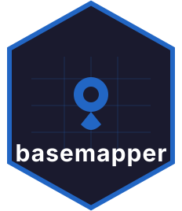

Getting started with basemapper
getting-started.RmdPython user? See the equivalent guide in the Python documentation.
basemapper renders styled map tiles into RGBA pixel arrays using a Rust core. It works headlessly — no browser, no display server, no GDAL required.
Installation
remotes::install_github("ar-puuk/basemapper", subdir = "r-basemapper")Step 1 — Choose a tile style
Every rendering function takes a style_input argument:
either a MapLibre GL style URL or an inline JSON string. The helper
functions build the JSON for common tile sources:
library(basemapper)
# OpenStreetMap raster tiles
osm_style <- raster_provider("https://tile.openstreetmap.org/{z}/{x}/{y}.png")
# ArcGIS Online vector tile basemap
esri_style <- esri_vector_provider(
"https://basemaps.arcgis.com/arcgis/rest/services/World_Basemap_v2/VectorTileServer"
)
# Custom MVT source with paint overrides
mvt_style <- vector_provider(
"https://example.com/tiles/{z}/{x}/{y}.mvt",
paint = list("fill-color" = "#e8e0d8", "line-color" = "#aaaaaa")
)Use list_layers() to inspect a style before
rendering:
list_layers(osm_style)Step 2 — Render with ggplot2
geom_basemap() is a lazy ggproto layer: it defers tile
fetching until coord_sf() has established the panel’s
geographic extent, so you never have to compute a bounding box
manually.
library(ggplot2)
library(sf)
nc <- st_read(system.file("shape/nc.shp", package = "sf"), quiet = TRUE)
ggplot(nc) +
geom_basemap(style_url = osm_style) +
geom_sf(fill = NA, colour = "steelblue", linewidth = 0.4) +
coord_sf() +
theme_void()Key parameters shared across all high-level functions:
| Parameter | Default | Description |
|---|---|---|
zoom |
NULL (auto) |
Tile zoom level 0–22 |
alpha |
1 |
Basemap opacity |
layers |
NULL (all) |
Layer filter — see below |
tile_timeout_ms |
10000 |
Per-tile HTTP timeout |
max_tiles |
256 |
Cap on tiles fetched per render |
Step 3 — Render with tmap
tm_basemap() returns a composable tmap v4 element. It
derives the map extent from the pipeline’s primary shape when
bbox = NULL:
library(tmap)
tm_shape(nc) +
tm_basemap(osm_style) +
tm_sf(fill = NA, col = "steelblue")Supply an explicit bbox when rendering outside a
tm_shape() pipeline:
tm_basemap(osm_style, bbox = st_bbox(nc))Step 4 — Filter layers
Pass a character vector to layers to keep only specific
layers, or prefix IDs with "-" to exclude them. Positive
and negative filters cannot be mixed.
# Keep only water and roads
render_basemap_raw(
bbox_3857 = c(-13700000, 4500000, -13600000, 4600000),
width = 512L,
height = 512L,
style_input = osm_style,
layers = c("water", "roads")
)
# Exclude POI labels
geom_basemap(style_url = osm_style, layers = c("-poi"))Step 5 — Low-level access
render_basemap_raw() gives direct access to the pixel
array for custom compositing or export:
m <- render_basemap_raw(
bbox_3857 = c(-13700000, 4500000, -13600000, 4600000),
width = 800L,
height = 600L,
style_input = osm_style
)
# m is an integer array [height × width × 4] with spatial attrs
dim(m) # 600 800 4
attr(m, "xmin") # -13700000
attr(m, "crs_epsg") # 3857
# Save with png package
png::writePNG(m / 255, "basemap.png")